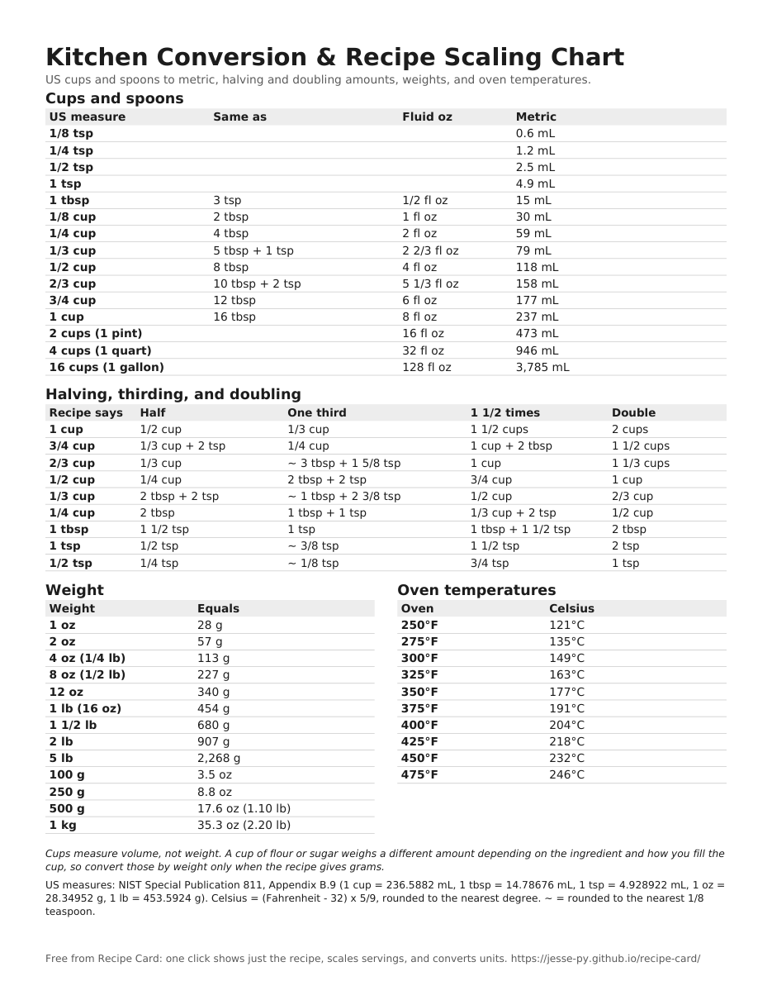

Printable kitchen conversion chart, with recipe scaling
One page to tape inside a cupboard door: US cups and spoons in metric, what half or a third of an awkward amount is (half of 1/3 cup is 2 tbsp + 2 tsp), ounces and pounds in grams, and oven temperatures in Celsius.
Download the free PDF 1 page, US Letter, black and white. On A4 paper, choose "Fit to page" when printing.

Cups and spoons
| US measure | Same as | Fluid oz | Metric |
|---|---|---|---|
| 1/8 tsp | 0.6 mL | ||
| 1/4 tsp | 1.2 mL | ||
| 1/2 tsp | 2.5 mL | ||
| 1 tsp | 4.9 mL | ||
| 1 tbsp | 3 tsp | 1/2 fl oz | 15 mL |
| 1/8 cup | 2 tbsp | 1 fl oz | 30 mL |
| 1/4 cup | 4 tbsp | 2 fl oz | 59 mL |
| 1/3 cup | 5 tbsp + 1 tsp | 2 2/3 fl oz | 79 mL |
| 1/2 cup | 8 tbsp | 4 fl oz | 118 mL |
| 2/3 cup | 10 tbsp + 2 tsp | 5 1/3 fl oz | 158 mL |
| 3/4 cup | 12 tbsp | 6 fl oz | 177 mL |
| 1 cup | 16 tbsp | 8 fl oz | 237 mL |
| 2 cups (1 pint) | 16 fl oz | 473 mL | |
| 4 cups (1 quart) | 32 fl oz | 946 mL | |
| 16 cups (1 gallon) | 128 fl oz | 3,785 mL |
Halving, thirding, and doubling
| Recipe says | Half | One third | 1 1/2 times | Double |
|---|---|---|---|---|
| 1 cup | 1/2 cup | 1/3 cup | 1 1/2 cups | 2 cups |
| 3/4 cup | 1/3 cup + 2 tsp | 1/4 cup | 1 cup + 2 tbsp | 1 1/2 cups |
| 2/3 cup | 1/3 cup | ~ 3 tbsp + 1 5/8 tsp | 1 cup | 1 1/3 cups |
| 1/2 cup | 1/4 cup | 2 tbsp + 2 tsp | 3/4 cup | 1 cup |
| 1/3 cup | 2 tbsp + 2 tsp | ~ 1 tbsp + 2 3/8 tsp | 1/2 cup | 2/3 cup |
| 1/4 cup | 2 tbsp | 1 tbsp + 1 tsp | 1/3 cup + 2 tsp | 1/2 cup |
| 1 tbsp | 1 1/2 tsp | 1 tsp | 1 tbsp + 1 1/2 tsp | 2 tbsp |
| 1 tsp | 1/2 tsp | ~ 3/8 tsp | 1 1/2 tsp | 2 tsp |
| 1/2 tsp | 1/4 tsp | ~ 1/8 tsp | 3/4 tsp | 1 tsp |
~ = rounded to the nearest 1/8 teaspoon; the exact amount is a little different.
Weight
| Weight | Equals |
|---|---|
| 1 oz | 28 g |
| 2 oz | 57 g |
| 4 oz (1/4 lb) | 113 g |
| 8 oz (1/2 lb) | 227 g |
| 12 oz | 340 g |
| 1 lb (16 oz) | 454 g |
| 1 1/2 lb | 680 g |
| 2 lb | 907 g |
| 5 lb | 2,268 g |
| 100 g | 3.5 oz |
| 250 g | 8.8 oz |
| 500 g | 17.6 oz (1.10 lb) |
| 1 kg | 35.3 oz (2.20 lb) |
Oven temperatures
| Oven | Celsius |
|---|---|
| 250°F | 121°C |
| 275°F | 135°C |
| 300°F | 149°C |
| 325°F | 163°C |
| 350°F | 177°C |
| 375°F | 191°C |
| 400°F | 204°C |
| 425°F | 218°C |
| 450°F | 232°C |
| 475°F | 246°C |
Cups measure volume, not weight. A cup of flour or sugar weighs a different amount depending on the ingredient and how you fill the cup, so convert those by weight only when the recipe gives grams.
Scaling a whole recipe? Recipe Card does this math for you on any recipe page: one click shows just the recipe, change the servings, and every amount updates in real kitchen fractions, in US units or metric. It's free and needs no install: drag the Recipe Card button to your bookmarks bar. Have a list instead? Paste it into the recipe scaler.
Where the numbers come from
US measures: NIST Special Publication 811, Appendix B.9 (1 cup = 236.5882 mL, 1 tbsp = 14.78676 mL, 1 tsp = 4.928922 mL, 1 oz = 28.34952 g, 1 lb = 453.5924 g). Celsius = (Fahrenheit - 32) x 5/9, rounded to the nearest degree. ~ = rounded to the nearest 1/8 teaspoon. See NIST SP 811, Appendix B.9. US nutrition labels use a rounded cup of 240 mL (21 CFR 101.9(b)(5)(viii)); the chart uses the exact US cup.